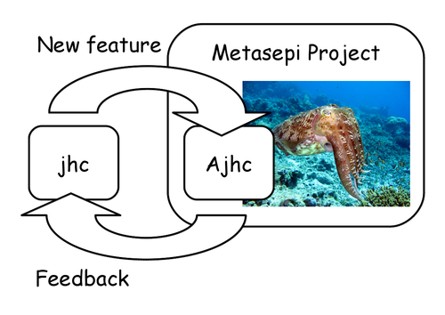

*** We are closing Ajhc project. ***
Metasepi Arafura iteration is closed. We decided to use ATS Programming Language for our next iteration. After merging Ajhc's Context Local Heap into jhc, this project will be shutdown.
Please use jhc instead of Ajhc.
History of Ajhc Haskell compiler
Please read Metasepi Foundation report in Japanese, that includes detail of technical information around Ajhc's runtime and GC. However you may hardly read it, because written by Japanese language. If you would like to automatically translate it by Google translate, this source code of the document may be useful.
We are welcome that you contribute us to translate it into English. But this document is a technical report as fiction novel style. This document has many "tentacles" words, because the novel part is parody of Squid Girl. Please relax to read it like reading some fiction novel.
What is Ajhc?
Ajhc is a Haskell compiler, and acronym for the following:
- A fork of jhc
- An accelerator to develop jhc
- Metasepi Arafura designed jhc
Why need Ajhc?
Jhc converts Haskell code into pure C language code running with jhc's runtime. And the runtime is written with 3000 line (include comments) pure C code. It's a magic!

Ajhc's mission is to keep contribution to jhc in the repository. Because the upstream author of jhc, John Meacham, can't pull the contribution speedy. (I think he is too busy to do it.) We should feedback jhc any changes. And also Ajhc aims to provide Metasepi project with a method to rewrite NetBSD kernel using Haskell. The method is called Snatch-driven development.
Ajhc is, so to speak, an accelerator to develop jhc.

Photo: Copyright (C) 2007 Silke Baron All Rights Reserved.
Demo: Rewrite NetBSD kernel driver with Haskell
NetBSD kernel's HD Audio sound driver has interrupt handler.
The interrupt handler of the demo is re-written by Haskell language.
At the demo, run following operations.
First, set breakpoint at the interrupt of finding headphone,
and see Haskell function names on backtrace.
Second, set breakpoint s_alloc() function, that allocate area
in Haskell heap. Make sure of calling the function while anytime
running kernel.
Nevertheless, playing wav file does not break up.
The source code is found at https://github.com/metasepi/netbsd-arafura-s1.
And a picture of the architecture is also at
http://www.flickr.com/photos/masterq/12616929055/.
Demo: Haskell code running on Cortex-M3 board
The demo is running code that compiled with Ajhc on Cortex-M3 board, mbed. It's a simple RSS reader for reddit.com, show the RSS titles on Text LCD panel. You could read the demo detail and source code at https://github.com/ajhc/demo-cortex-m3.
Demo: Android NDK application written with Haskell
The touchable cube application is written with Haskell and compiled by Ajhc. The application is available at Google Play. In the demo, the application is breaked by ndk-gdb debugger when running GC. You could read the demo source code at https://github.com/ajhc/demo-android-ndk. Also read slide about the detail at http://www.slideshare.net/master_q/20131020-osc-tokyoajhc.
How to install Ajhc
Easy to install Ajhc with Cabal.
$ sudo apt-get install haskell-platform gcc m4 patch libncurses5-dev
$ cabal install drift
$ export PATH=$PATH:$HOME/.cabal/bin
$ cabal install ajhc
$ ajhc --version
ajhc 0.8.0.10 (66a602abc10dec74e2c0bb9289819a015bf21e4f)
compiled by ghc-7.4 on a x86_64 running linux
$ echo 'main = print "hoge"' > Hoge.hs
$ ajhc Hoge.hs
$ ./hs.out
"hoge"
Usage
Please read Ajhc User's Manual (in Japanese).
License
- Runtime: MIT License
- Haskell libraries: MIT License
- The others: GPLv2 or Later.
Contact
Ajhc is developed by Metasepi team. Dive into https://github.com/ajhc to join us!